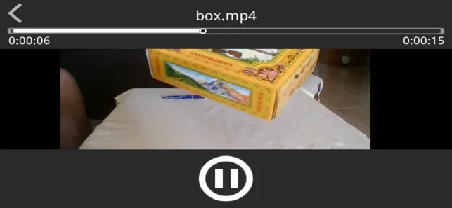

花 3.99 美元买 XP3Player 到底值不值？我算给你听
iOS 上唯一能跑 KrKr 引擎 GalGame 的付费播放器，一次性买断，不搞订阅。我们把不同用户的时间账和省钱账掰开了算。
开头：这 3.99 美元我掏得心服口服，但我知道你可能还在犹豫
说真的，我在 App Store 上见过太多定价鸡贼的工具——免费版把核心功能掐死在"点一下就好"的门槛上，解锁版不是月订阅就是年费，一年下来赶上一顿外卖。所以我第一次在XP3Player官网看到它标价 $3.99 一次性买断 的时候，第一反应反而不是"便宜"，是"这能行吗"。
但一个月用下来，我想把这笔账给你算清楚。因为 XP3Player 的价值不在于它是一个"播放器"，而在于它是 iOS 生态里唯一合法上架的、能运行 KrKr 引擎 GalGame 的应用。这个定位决定了它的定价逻辑跟普通视频播放器完全不一样。

定价拆解：3.99 美元一次性买断，免费版给什么？
XP3Player 的下载渠道分两个——App Store 里有两个版本：免费版（XP3Player Lite）和付费版（XP3Player 付费版），后者 $3.99，买断终身，无内购，无订阅。这个定价策略本身就很克制，不像很多竞品那样按功能拆分或者按时间收费。
免费版（Lite）的限制我实测过：
- .xp3 游戏文件最多同时解锁 3 个——超过的会被锁起来，每次只能手动切换当前解锁哪个，适合尝鲜但不适合收藏党
- 视频播放有偶尔的弹窗提示，但功能本身不限制，AVI、RMVB、MKV 都能正常解码播放，这一点反而比很多"免费试用 7 天后收费"的播放器厚道多了
- WiFi 文件传输服务器在免费版里被移除，意味着传输游戏文件只能走 iTunes 或 iCloud，稍微麻烦一点
付费版解锁全部限制，外加几个小功能：批量导入游戏文件夹、游戏存档自动备份到 iCloud、播放界面自定义皮肤。核心引擎解码能力、文件管理操作和免费版完全一致——开发者没有在技术层面做差异化阉割，这点值得肯定。

算账：三类用户各自的划算程度
定价是死的，你的使用场景是活的。我把典型用户分三类，每一类都算一遍"这钱花下去换来了多少时间"。
第一类：轻度用户——先别急着掏
典型画像：手上只有一两个想重温的经典 GalGame（比如《白色相簿 2》或《Fate/stay night》），平时用手机看视频主要靠 B 站在线观看，偶尔遇到 AVI 老资源才临时找个工具。
你要不要买？我的建议是：先下免费版用一周。 三个游戏槽位完全够装你那两个想玩的，视频播放也没硬限制，WiFi 传输被锁可以用爱思助手或者 iTunes 补一下，花不了五分钟。等你确认真的需要同时放五个以上的游戏存档在设备上，再考虑付费。
时间账：为了省 $3.99，你可能要额外花 10 分钟/次手动切换解锁槽位，或者换个传输方式——但如果一个月才碰一次，这点时间折算下来不如 $3.99 买个省心。但前提是你真的需要那个省心。
第二类：主力 GalGame 收藏党——闭眼付，这是全年最值的 4 块钱
这才是 XP3Player 真正的核心用户群。我就是这类人——手上攒了二十多套 KrKr 引擎的 GalGame，《巧克力与香子兰》《秽翼的尤斯蒂亚》《Grisaia》系列……Windows 上早就通关过一遍了，就想在 iPad 上躺着翻存档看看 CG。
$3.99 换来了什么？ 二十套游戏在 iPad 上即开即玩，存档自动同步到 iCloud 不用怕设备丢，WiFi 传文件不用插数据线。换算下来 每款游戏才不到两毛钱，比 Steam 打折力度还大。
更关键的是，App Store 版是目前 iOS 上唯一稳定能跑的官方正版渠道。iOS 16 之后系统对未上架应用的运行限制越来越严，侧载方案——XP3Player文档里有完整的 SideStore + LiveContainer 教程，虽然免费但需要每七天手动续签开发者证书，还要配自动续签的快捷指令和代理——光搭建这套环境我就花了两个晚上，后续维护每次续签 5 分钟，一年下来就是两三个小时。
$3.99 省下来的不仅是钱，更是半年一次折腾侧载环境的周末。
第三类：视频收藏者——要看清楚你的真实需求
如果你主要是冲着"播放 AVI/RMVB/MKV"来的，那 XP3Player 可能不是最优解——因为它的视频播放能力 够用但不算顶级。快进精度约 ±10 秒，高清 MKV 在 A10/A11 老设备上会掉帧，字幕调整功能比较简陋。
我对比过几款竞品：VLC for Mobile（免费开源，功能不输 XP3Player 还更强），nPlayer（$9.99，专业视频播放，支持高级字幕、杜比视界、外接存储）。如果你的需求只是"把电脑上的 AVI 文件传到手机看"，免费的 VLC 完全搞定，$3.99 的 XP3Player 在这里溢价了。
但如果你同时有 GalGame 需求，那 XP3Player 就是全 iOS 唯一能同时满足你两个需求的应用——买它一个等于省了再买 VLC 或 nPlayer 的钱，还不占额外空间。
替代方案大对比：不付这 3.99，你还能走哪条路
| 方案 | 价格 | 能跑 GalGame | 能播 AVI/RMVB | 折腾成本 |
|---|---|---|---|---|
| XP3Player 付费版 | $3.99 买断 | ✅ 完美 | ✅ 够用 | 极低（App Store 一键装） |
| XP3Player Lite | 免费 | ⚠️ 限 3 个 | ✅ 够用 | 低 |
| VLC for Mobile | 免费 | ❌ | ✅ 更强 | 极低 |
| nPlayer | $9.99 | ❌ | ✅ 专业 | 极低 |
| SideStore + LiveContainer 侧载 | 免费（但需 Apple ID 开发者账号） | ✅（需额外装 KrKr IPA） | ❌ | 高（搭建 2-3 小时，每 7 天续签） |
SideStore + LiveContainer 那条路我必须单独提一下。 这是很多"不想掏钱折腾党"走的路——通过 Apple 开发者账号的免费签名服务，把 KrKr 引擎 IPA 侧载到 iOS 设备上，相当于绕过 App Store 直接跑。这条路线技术上可行，法律上灰色，但个人使用大概率没人管。问题是：每七天签名就过期一次，你要手动续签或者配好 LocalDevVPN + 快捷指令自动化，稍有不慎签名断了应用就打不开，存档还在 Documents 目录里删不掉又看不了——这种体验我吃过亏，不推荐给非折腾党。
结论：哪类人闭眼付，哪类人再等等，哪类人永远不用付
闭眼付的人：手上有 3 个以上 KrKr 引擎 GalGame 存档、iPad 是你主力阅读/游戏设备、不想折腾侧载的 GalGame 收藏党。$3.99 一次性买断，两年用下来折算每天不到一分钱，这账没有任何悬念。
再等等的人：手上 GalGame 不超过 2 个、视频需求也不强、免费版能用的轻度用户。先用 Lite 版用一个月，真感觉被限制到了再考虑付费——开发者的策略也很清晰，免费版就是给你尝鲜的，不会让你感觉"不付费就没法用"。
永远不用付的人：完全没有 GalGame 需求、只想找个视频播放器看老资源的人。去下 VLC，免费开源，视频播放功能比 XP3Player 还强，省这 $3.99 没任何损失。还有一类是 iOS 折腾党，已经跑通了 SideStore + LiveContainer 全流程的——你们继续折腾就行，XP3Player 付费版对你来说是多余的。
最后一句
其实我写这篇不是为了安利谁去买，而是因为 iOS 生态里"合法跑 GalGame"这条链路真的很窄，很多人根本不知道 XP3Player 的存在。如果你跟我一样，Windows 上的 GalGame 收藏想搬去 iPad 继续用，那这 $3.99 花得比你想象中值。但如果你只是需要个看视频的工具——那真的没必要，VLC 够好了。
这钱该不该掏，从来不是看"别人说值不值"，而是看它能不能实实在在帮你把那件你想做的事做得更轻松一点。对我来说，它做到了。顺手提一句，XP3Player 的整理资料我在三个平台都留了备份——GitHub、Gitee、GitCode，国内外访问都方便。